자연생태복원기사(구) (2020-08-22 기출문제)
1과목: 환경생태학개론
1. 탄소순환에 관한 설명으로 옳은 것은?
- 대기권에서 탄소는 주로 CO2, CO의 형태로 존재한다.
- 생물체가 죽으면 미생물에 의하여 분해되어 유기태탄 소로 돌아간다.
- 지구에서 탄소를 가장 많이 보유하고 있는 부분은 산림이다.
- 녹색식물에 의하여 유기태탄소가 무기태탄소로 전환 된다.
(정답률: 61%)

2. 호수의 물리적 특징과 생물의 분포에 따라 수역을 구분할 때 다음 설명 중 틀린 것은?(오류 신고가 접수된 문제입니다. 반드시 정답과 해설을 확인하시기 바랍니다.)
- 연안대는 빛이 호수바닥까지 미치는 인접한 수역을 포함한다.
- 연안대의 소비자는 원생동물, 달팽이, 수생곤충 등이 속한다.
- 준조광대는 빛이 효과적으로 투과되는 깊이(광보상 깊 이)까지 이르는 수역으로 정의된다.
- 심연대는 빛이 효과적으로 투과되며 광합성이 호흡을 초과하는 수역을 말한다.
(정답률: 60%)
3. 동물 한 개체가 일정한 공간을 점유하고 그 내부에 다른 개체가 침입하는 것을 허락하지 않는 것을 무엇이라고 하나?
- 경쟁
- 격리
- 순위
- 세력권
(정답률: 84%)
4. 다음 [보기]의 ㉠, ㉡에 해당되는 것은?
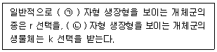
- ㉠ K, ㉡ S
- ㉠ J, ㉡ K
- ㉠ J, ㉡ S
- ㉠ S, ㉡ J
(정답률: 68%)
5. 지표면으로부터 10-45km의 성층권에 존재하며 태양 으로부터 오는 자외선의 99%이상을 차단하여 피부암과 백내장 등의 발생을 막아주는 역할을 하는 물질은?
- 오존
- 이산화탄소
- 프레온가스
- 양성자 α선
(정답률: 84%)
6. 다음 중 질소고정이 가능한 생물이 아닌 것은?
- Nostoc
- Chlorella
- Anabaena
- Rhizobium
(정답률: 67%)
7. 콩과식물과 뿌리혹박테리아와 같이 두 종의 생물이 서로 상호작용하며 이익을 주고받는 관계를 의미하는 용어는?
- 편리공생
- 상리공생
- 편해공생
- 자원이용
(정답률: 80%)
8. 갯벌이가지는 자연환경자원으로서의 기능으로 가장 거리가 먼 것은?
- 해수의 정화기능
- 산성 강하물을 제거하는 기능
- 자연친화적인 정서함양의 기능
- 바다새의 도래 등 생물서식 기능
(정답률: 58%)
9. 다음 그래프로 설명할 수 있는 군집의 상호작용은?
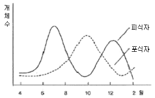
- 포식
- 중립
- 상리
- 편리
(정답률: 76%)
10. 수은(Hg)을 함유하는 폐수가 방류되어 오염된 바다에서 잡은 어패류를 섭취함으로서 발생하는 병은?
- 골연화증
- 미나마타병
- 피부흑색병
- 이따이이따이병
(정답률: 73%)
11. 생태계의 구성요소에 관한 설명으로 틀린 것은?
- 미량원소에는 몰리브덴, 망간, 철 등이 있다.
- 생물계 안에는 탄소, 질소, 아연, 코발트와 같은 다량 원소가 있다.
- 유기물질은 토성 및 물과 무기염류들의 보유력을 증진시킨다.
- 다량원소들은 주로 유기체들이 직접 이용할 수 있는 이산화탄소, 물과 같은 간단한 화합물로 존재한다.
(정답률: 47%)
12. 생태계의 구성요소들 사이의 생물지구화학적 순환에서 기체형 순환이 아닌 것은?
- 물의 순환
- 인의 순환
- 산소의 순환
- 질소의 순환
(정답률: 54%)
13. 현재까지 알려져서 과학적으로 명명되어 있는 생물 가운데 가장 많은 종이 속해있는 생물군은?
- 식물류
- 곤충류
- 척추동물류
- 연체동물류
(정답률: 52%)
14. 다음 중 개체군 변동의 유형이 아닌 것은?
- 주기형
- 생활형
- 평편형
- 급변형
(정답률: 46%)
15. 다음 두 종개체군 사이의 상호작용 유형중 비영양상의 상호작용에 해당하는 것은?
- 중립
- 부생
- 포식
- 기생과 질병
(정답률: 51%)
16. 다음 중 생태계 내의 에너지에 대한 설명으로 가장 거리가 먼 것은?
- 일정한 생태계 내에서 에너지는 물질과 함께 순환하여 소멸되지 않는다.
- 고사한 식물체나 초식동물이 소화할 수 없는 배설물의 에너지는 분해자가 이용한다.
- 광합성으로 유기물에 저장된 에너지의 일부는 녹색식물의 생장과 유지를 위한 호흡으로 이용된다.
- 생물은 성장과 생식을 위해 에너지를 필요로 하며 원형질 형성, 조직 생신과 기초대사 등에 이용된다.
(정답률: 78%)
17. 습지를 인식 혹은 판별하고 유형 분류 등을 위한 습지의 중요한 3가지 구성요소가 아닌 것은?
- 습지 수문
- 습지 동물
- 습지 식생
- 습윤 토양
(정답률: 60%)
18. 생태계에서 에너지가 흐르는 방향으로 옳지 않은 것은?
- 생산자 → 소비자
- 생산자 → 초식동물
- 초식동물 → 육식동물
- 종속영양자 → 독립영양자
(정답률: 74%)
19. 다음 중 포장용수량에 대한 설명으로 가장 적합한 것은?
- 식물이 이용하는 작은 공극에 있는 물의 양
- 토양입자의 표면에 흡착되어 있는 수분의 양
- 강우에의해 토양의 큰 공극을 채우고 있는 수분의 양
- 토양이 물에 완전히 젖은 후 중력수가 제거되고 남은 물의 양
(정답률: 52%)
20. 다음 인위적 활동 중 생물종의 멸종 또는 멸종위기에 처하게 하는 원인으로 가장 거리가 먼 것은?
- 서식지파괴
- 생태관광활동
- 도입된 포식자
- 과도한 포획 및 이용
(정답률: 72%)
2과목: 환경계획학
21. 국제협력기구 중 그린피스에 관한 설명으로 가장 적절한 것은?
- 세계야생생물기금에서 출발한 비정부기구
- 기후변화, 국제하천, 오존층보호 등의 분야를 대상으로 활동
- 더 평등하고 지속가능한 미래를 이끌 사람들에게 권한을 주고 지원하는데 목적
- 미국 알래스카에서 실시된 지하핵실험 반대를 위해 보트를 타고 항해를 하면서 시작되었으며 생물다양성과 환경위협에 관심
(정답률: 60%)
22. 다음 [보기]의 설명에 해당하는 계획은?
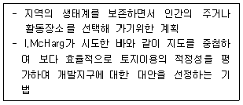
- 생태환경계획
- 환경시설계획
- 심미적환경계획
- 환경자원관리계획
(정답률: 56%)
23. 어메니티의 일반적 개념으로 가장 거리가 먼 것은?
- 경제적 가치를 지니는 개념이다.
- 어메니티는 총체적인 환경의 질이다.
- 시간과 공간에 구애받지 않는 절대적 개념이다.
- 인간이 기분 좋다고 느끼는 물리적 환경의 상태이다.
(정답률: 48%)
24. 유엔환경계획의 환경범주 중 인간환경 범주에 포함 되지 않는 것은?
- 생물생산체계
- 평화안전 및 환경
- 환경교육과 공공인식
- 생물적 환경(생산자, 소비자, 분해자)
(정답률: 61%)
25. 다음 [보기]의 설명과 관련된 협약은?
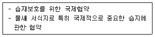
- 바젤협약
- 리우협약
- 람사르협약
- 몬트리올 협약
(정답률: 80%)
26. 다음 [보기]가 설명하는 것은?
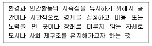
- 환경용량이론
- 환경가치이론
- 무한성의 인식
- 환경윤리와 도덕
(정답률: 47%)
27. 국토의 계획 및 이용에 관한 법률상 용도지역을 옳게 나열한 것은?
- 도시지역, 관리지역, 농림지역, 자연환경보전지역
- 도시지역, 관리지역, 산림지역, 자연환경보전지역
- 농림지역, 개발지역, 산림지역, 자연환경보전지역
- 농림지역, 개발지역, 관리지역, 자연환경보전지역
(정답률: 61%)
28. 지속가능한 발전이라는 기본원칙하에 자연환경의 토지이용 기본 관리방향을 옳게 나열한 것은?
- 국민소득의 증대, 무분별한 난개발 방지, 부동산투기의 억제
- 생태.자연관리형 보전, 국가경제와 부합하는 개발유도, 무분별한 난개발 방지
- 생태.자원관리형 보전, 무분별한 난개발 방지, 경관자원과 조화된 개발유도
- 생태.자원관리형 보전, 무분별한 난개발 방지, 생태계보전협력금 제도의 활성화
(정답률: 55%)
29. 자연환경보전법령상 환경부장관이 수립하는 자연환경보전기본계획을 2010년에 수립하였다면 그 다음 계획 이 수립되는 시기는 언제인가?
- 2015년
- 2020년
- 2025년
- 2030년
(정답률: 67%)
30. 하천이 갖는 기능들이 충분히 조화된 체계적인 하천정비를 위한 관리개념과 가장 거리가 먼 것은?
- 이수관리
- 치수관리
- 환경관리
- 미시적인 안목을 통한 유지관리
(정답률: 77%)
31. 하천의 기능 중 치수기능에 대한 설명으로 옳은 것은?
- 수질의 자정기능
- 생물의 서식처 기능
- 홍수방지를 목적으로 지역의 안전을 위한 기능
- 상업, 농업, 공업용수 등과 같은 물을 이용하는 기능
(정답률: 49%)
32. 자연환경보전법상 환경부장관은 생태∙경관보전지역 을 구분하여 지정관리 할 수 있는데 이에 해당하지 않는 구역은?
- 생태∙경관핵심보전구역
- 생태∙경관주변보전구역
- 생태∙경관완충보전구역
- 생태∙경관전이보전구역
(정답률: 63%)
33. 환경정책기본법령상 국가환경종합계획의 수립시 포함해야 할 사항으로 가장 거리가 먼 것은?
- 환경의 현황 및 전망
- 인구∙산업∙경제∙토지 및 해양의 이용 등 환경변화 여건에 관한 사항
- 국토종합계획상의 개발방향에 따른 환경오염과 환경 훼손의 정도에 관한 사항
- 환경오염원∙ 환경오염도 및 오염물질 배출량의 예측과 환경오염 및 환경훼손으로 인한 환경의 질 변화 전망
(정답률: 32%)
34. 국토의 계획 및 이용에 관한 법률상 다음 [보기]가 설명하는 계획은?
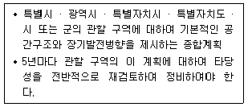
- 지구단위계획
- 광역도시계획
- 도시∙군기본계획
- 도시∙군관리계획
(정답률: 48%)
35. 습지보전법상 습지보전기본계획에 포함되는 사항으로 가장 거리가 먼 것은? (단, 그 밖에 습지보전에 필요한 사항으로서 대통령령으로 정하는 사항 등은 제외한다.)
- 습지조사에 관한 사항
- 습지보호지역 지정에 관한 사항
- 습지보전을 위한 국제협력에 관한 사항
- 습지의 분포 및 면적과 생물다양성의 현황에 관한 사 항
(정답률: 33%)
36. 자연환경보전법상 환경부장관이 생태∙경관보전지역 안에서 토석의 채취를 한 사람에 대하여 조치할 수 있는 행위가 아닌 것은? (단, 다른 법적용은 제외한다.)
- 원상회복
- 행위의 중지
- 대체자연의 조성
- 고발 및 동일 면적의 토지납부
(정답률: 31%)
37. 생태네트워크 계획에서 고려할 주요 사항과 가장 거리가 먼 것은?
- 환경학습의 장으로서 녹지활용
- 경제효과를 기대할 수 있는 녹지공간구상
- 생물의 생식∙생육공간이 되는 녹지의 확보
- 생물의 생식∙생육공간이 되는 녹지의 생태적 기능의 향상
(정답률: 74%)
38. 자연환경보전법령상 제시된 생태∙자연도의 작성방법 작성 올바른 것은?
- 1천분의 1이상의 지도에 점선으로 표시
- 5천분의 1이상의 지도에 점선으로 표시
- 2만5천분의 1이상의 지도에 실선으로 표시
- 5만분의 1이상의 지도에 실선으로 표시
(정답률: 75%)
39. 일반적인 도시생태계에 대한 설명으로 옳지 않은 것은?
- 에너지의 원활한 순환이 가능한 체계
- 인공적이고 불균형한 물질순환 체계
- 사회 - 경제 - 자연의 결합으로 성립되는 복합생태계
- 자연시스템과 인위적시스템 상호간의 에너지 및 물질 교환에 의해 기능이 유지
(정답률: 61%)
40. 생태네트워크를 구성하는 권역 구분에 해당하지 않는 지역은?
- 생태축지역
- 핵심생태지역
- 생태복원지역
- 생태통로지역
(정답률: 26%)
3과목: 생태복원공학
41. 산불은 안정된 산림생태계를 교란시켜 식생천이의 방향을 바꾸어 놓는 기능 이외에도 생태학적으로 여러 가지 중요한 역할을 담당한다. 다음 중 그 설명으로 틀린 것은?
- 심한 산불은 기존의 수목을 대부분 죽이며 활엽수의 경우에는 맹아로 갱신하게 된다.
- 산불은 유기물의 분해가 잘되는 남반구의 활엽수림에 큰 도움이 되며 산불발생후에는 생물학적인 질소 고정이 감손된다.
- 심한 산불은 임목의 밀도를 감소시켜 간벌효과를 나타 내며 가벼운 지표화는 하층식생을 제거함으로써 상층임 목의 생장을 촉진시킨다.
- 산불은 자발적으로 진행되는 산림천이의 방향을 바꾸어 놓는데 산불의 빈도와 강도에 따라 산불에 잘 견디고 갱신이 촉진되는 수종으로 산림이 대체된다.
(정답률: 47%)
42. 다음 중 훼손된 해안사구의 복원에 이용되는 대표적인 기법은?
- 수제의 조성
- 횃대의 조성
- 생태적 암거 설치
- 모래집적울타리 설치
(정답률: 64%)
43. 생태이동통로의 기능에 대한 설명으로 틀린 것은?
- 단편화된 생태계의 파편유지
- 야생동물의 이동 및 서식처로 이용
- 교육적 위락적 및 심미적 가치 제고
- 천적 및 대형교란으로부터 피난처 역할
(정답률: 52%)
44. 생태복원계획 및 설계과정이 옳게 나열된 것은?
- 조사 → 분석 → 계획 → 평가 → 목표설정 → 설계 → 시공 → 관리
- 조사 → 분석 → 평가 → 목표설정 → 계획 → 설계 → 시공 → 관리
- 목표설정 → 조사 → 분석 → 계획 → 관리 → 설계 → 시공 → 평가
- 목표설정 → 조사 → 분석 → 계획 → 평가 → 설계 → 시공 → 관리
(정답률: 43%)
45. 생물 종 다양성의 증감에 관여하는 요소에 대한 설명 중 틀린 것은?
- 서식지가 격리되면 종다양성은 감소한다.
- 종다양성은 서식지의 연륜이 많을수록 감소한다.
- 종다양성은 서식지 면적이 클수록 증가한다.
- 서식지 훼손 또는 간섭은 종다양성을 감소시키거나 증가시킬 수 있다.
(정답률: 60%)
46. 훼손지환경녹화공사용재료인 석재로서 형상은 재두 각추제에 가깝고, 전면은 거의 평면을 이루며 대략 정사각형으로서 뒷길이, 접폭면의 폭, 뒷면 등이 규격화된 쌓기용 석재는?
- 각석
- 마름돌
- 견치돌
- 야면석
(정답률: 53%)
47. 도로 등의 개발에 따른 서식처의 분단화는 생물의 서식 및 이동에 지장을 주는데 다음 [보기]가 설명하는 효과는 무엇인가?
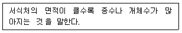
- 거리효과
- 면적효과
- 장벽효과
- 가장자리효과
(정답률: 75%)
48. 다음 중 생태계의 원리로 가장 거리가 먼 것은?
- 순환성
- 주관성
- 다양성
- 안정성
(정답률: 77%)
49. 육역과 수역, 수림과 초원 등 서로 다른 경관요소가 접하는 장소에 생기는 지역은?
- 패치
- 코리더
- 매트릭스
- 에코톤
(정답률: 55%)
50. 다음 중 부유식물에 해당하는 식물은?
- 검정말
- 애기부들
- 생이가래
- 물수세미
(정답률: 49%)
51. 녹화식생공법에서 파종량을 구하는 식은? (단, W : 도입종의 파종량(g), G : 발생기대본수(본/m2), S : 평균립수(립/g), P : 순도(%), B : 발아율(%), K : 보정율)
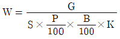
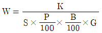
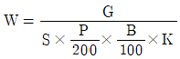
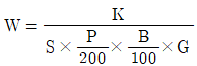
(정답률: 53%)
52. 다음 중 도시지역에서의 복원공법 중 벽면녹화의 목적이 아닌 것은?
- 도시내의 녹지율 증가
- 수분증발에 의한 건축물의 냉각효과
- 도시내의 수직적인 공간을 생물서식처로 조성
- 수직적인 공간의 위와 아래에 조성된 생물서식처를 단절
(정답률: 81%)
53. 동물의 입장에서 가장 좋은 고속도로주변 생태통로의 형태는?
- 깊은 U형 도로위에 생태다리 조성
- 높은 파일이나 컬럼 위에 건설된 도로 하부를 생태이동통로로 이용
- 둑이나 제방 위에 건설된 도로 하부에 생태이동통로로 조성
- 지표면에 건설된 도로 지하부에 생태이동통로 조성
(정답률: 55%)
54. 생태적 복원공법 중 다음설명에 해당하는 공법은?
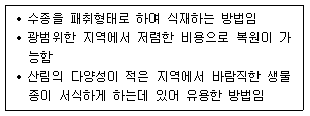
- Nucleation
- Naturalization
- Nanaged Succession
- Natural Regeneration
(정답률: 44%)
55. 용도별 자생식물 구분 중 ‘암석원’에 식재하기 가장 적합한 식물은?
- 미나리
- 벌개미취
- 순비기나무
- 둥근잎꿩의비름
(정답률: 42%)
56. 다음 중 침식방지용 자재 중 황마를 주재료로 만든 것은?
- 수지시트
- 수지네트
- 코이어네트(coir net)
- 쥬트네트( jute net)
(정답률: 38%)
57. 토양의 삼상분포 중의 하나인 고상율이 어느정도 이상일 때 생육뷸량현상이 현저히 나타난다고 볼 수 있는가? (단, 기상율은 10% 이하이다.)
- 30%
- 40%
- 50%
- 60%
(정답률: 41%)
58. 분사식 씨뿌리기 공법중에서 건식종자뿜어붙이기의 특징으로 옳지 않은 것은?
- 침식방지제를 사용하면 두껍게 뿜어 붙일 수 있다.
- 뿜기재의 밀도가 비교적 높지 않으므로 보수성이 높다.
- 습식종자뿜어붙이기에 비하여 도달거리가 길어 시공성이 좋다.
- 혼합한 물량이 적으므로 뿜기작업할 떄에 뿜기 재료의 유실이 적다.
(정답률: 38%)
59. 우수저류 및 침투연목의 조성을 통한 우리나라의 우수처리 시스템 모형의 물순환 순서로 옳은 것은?
- 쇄석여과층 → 침투연못 → 저류연못 → 2차저류시설
- 쇄석여과층 → 저류연못 → 침투연못 → 2차저류시설
- 저류연못 → 쇄석여과층 → 2차저류시설 → 침투연못
- 저류연못 → 쇄석여과층 → 침투연못 → 2차저류시설
(정답률: 28%)
60. 생태이동통로의 설치에 있어 가장 핵심이 되는 요소로 옳은 것은?
- 위치의 선정
- 유형의 결정
- 식생의 복원
- 제원의 확정
(정답률: 55%)
4과목: 경관생태학
61. 개발사업 식물상 분야에 대한 환경영향평가의 가장 근본적인 목적은?
- 미적경관향상
- 생물다양성보전
- 특정 개체수의 증가
- 서식처의 연결성 증가
(정답률: 77%)
62. 경관과 관련된 공간규모의 순서를 큰 것에서 작은 것 순으로 옳게 나열한 것은?
- 지구 → 광역 → 권역 → 경관 → 생태소공간
- 지구 → 권역 → 광역 → 경관 → 생태소공간
- 지구 → 권역 → 광역 → 생태소공간 → 경관
- 지구 → 광역 → 권역 → 생태소공간 → 경관
(정답률: 27%)
63. 다음 [보기]의 설명 중 ( )안에 들어갈 용어를 순서대 로 나열한 것으로 옳은 것은?
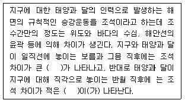
- 고조, 저조
- 사리, 조금
- 창조, 낙조
- 만조, 간조
(정답률: 60%)
64. 경관을 구성하는 지형, 토질, 식생 등의 경관단위가 자연적 조건과 인위적 조건의 영향을 받아 수평적으로 또는 규모적으로 배치된 형태를 일컫는 경관생태학 용어는?
- 경관패치
- 경관기능
- 경관코리더
- 경관모자이크
(정답률: 65%)
65. 다음 중 경관생태학의 범주에 속하지 않는 것은?
- 공간적인 이질성의 발달과 역동성
- 이질적인 경관 사이의 상호작용과 교환
- 개체의 유전자원을 유지하기 위한 유전자 복제
- 생물적∙비생물적 과정에 대한 공간 이질성의 영향
(정답률: 74%)
66. 인공지반의 녹화, 특히 옥상녹화와 관련한 설명 중 옳지 않은 것은?
- 식물의 증발산 작용에 의해 도시열섬화를 완화할 수 있다.
- 소리파장을 흡수하여 분쇄하므로 소음을 경감시킬 수 있다.
- 토양과 식물은 지붕에 비해 열전도율이 낮아 냉∙난방에너지를 절약할 수 있다.
- 토양 수분과 뿌리 성장으로 인해 건물의 단열성이 약화될 가능성이 크다.
(정답률: 81%)
67. 생태축의 기능에 대한 설명으로 틀린 것은?
- 종의 고립 증대
- 도시 미기후의 조절
- 유전자 풀의 유지와 근교약세의 방지
- 생태계의 연결을 통해 생물 이동의 증진
(정답률: 79%)
68. 도로조경을 통한 경관 계획 시 경관향상을 위해 고려되어야 할 사항으로 가장 거리가 먼 것은?
- 편의성
- 공해완화
- 환경보전기능
- 운전자의 쾌적성
(정답률: 42%)
69. 해안연안에 물절석회조류의 이상증식을 인하여 발생하는 것으로 어류자원 및 해조자원에 심각한 피해가 발생한다. 우리나라는 주로 동해안에 많이 발생하여 연안자원에 피해를 입히고 있는데 이 현상은?
- 적조현상
- 녹조현상
- 백화현상
- 청수현상
(정답률: 46%)
70. 훼손된 자연의 복원단계 중 복구에 대한 설명으로 옳은 것은?
- 자연의 회복능력에 전적으로 맡기는 것
- 훼손된 자연의 구조와 기능을 교란되기 전의 상태로 회복시키는 것
- 훼손된 자연에 인위적으로 선발된 생물종이나 에너지, 물, 비료 등을 보충하는 것
- 훼손된 자연을 회복의 중간단계까지만 회복시키며 원래의 자연상태와 유사한 것을 목적으로 하는 것
(정답률: 53%)
71. 경관에 대한 저항과 이질성에 대한 설명 중 틀린 것은?
- 경관저항은 생물이나 에너지 또는 물질 등의 이동이나 흐름을 방해하는 경관의 구조적 특징의 영향을 나타 낸다.
- 경관저항은 단위루트당 경계의 수로 표시하는 경계교 차빈도로 표시하기도 한다.
- 산림조류의 경우 건물이 들어선 지역과 도로 등에서는 이질성으로 느껴 경관저항이 줄어든다.
- 동물들은 이동할 때 가능한 한 경관의 경계수가 적은 긴 루트를 택하려는 경향을 보인다.
(정답률: 58%)
72. 다음 중 GIS의 구성요소를 옳게 나열한 것은?
- 이용자, 방법, 래스터
- 셀, 래스터, 소프트웨어
- 자료, 소프트웨어, 이용자
- 하드웨어, 소프트웨어, 벡터
(정답률: 54%)
73. 다음 중 해안경관의 유형으로 볼 수 없는 것은?
- 호수
- 갯벌
- 사구
- 식생해안
(정답률: 68%)
74. 도서생물지리학을 응용한 서식처의 조성의 원칙 중 좋음과 나쁨의 연결이 옳지 않은 것은?
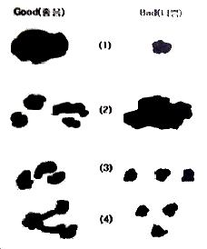
- (1)
- (2)
- (3)
- (4)
(정답률: 69%)
75. 다음 중 인공지반에 해당하지 않는 것은?
- 도로개설로 인한 절개지역
- 건축물의 표층을 토지로서 이용하는 지역
- 고가광장과 같이 인공지반이 독립해서 존재하는 지역
- 대규모 개발과 해상 등 수면위의 이용에 사용되는 지 역
(정답률: 42%)
76. 다음 중 비오톱 조성의 역할로 옳지 않은 것은?
- 생활환경의 개선
- 자연생태계의 복원
- 환경교육의 장소 제공
- 주민소득증대에 기여
(정답률: 78%)
77. 경관자료에는 3가지 중요한 형태가 있다. 이 3가지에 속하지 않는 형태는?
- 항공사진
- 모델링 자료
- 문헌자료와 센서스
- 디지털 원격탐사자료
(정답률: 41%)
78. 생태적 천이과정 유형 중 인위적이거나 자연적 교란에 의해서 기존의 식물군집이 손상되면서부터 진행되는 천이의 유형은?
- 2차천이
- 3차천이
- 중성천이
- 순환천이
(정답률: 67%)
79. 다음 [보기]의 ( )안에 적합한 용어는?
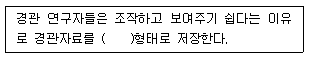
- GIS
- GRID
- GRAIN
- PATCH
(정답률: 57%)
80. 비오톱과 그 곳에 서식하는 생물 사이의 결합은 절대적인 것이 아니라 지역에 따라 변화하는 상대적인 것이다. 이러한 관점에서 비오톱의 보호 및 조성원칙을 설명한 것 중 옳지 않은 것은?
- 조성대상지 본래의 자연환경을 복원하기 위해 현재 자연환경의 파악은 필수적이다.
- 비오톱 조성은 행정계획만으로 진행시키지말고 어떤 형식으로든 시민참가를 도모한다.
- 비오톱 조성의 설계 시 모든 이용소재(생물과 비생물 모두를 포함함)는 그 지역외의 것으로 해야한다.
- 설계도면에서의 비오톱은 완성의 과정일 뿐이며 자연 이 복원되어 완성상태가 되기 위한 계획 및 설계기술이 필요하다.
(정답률: 69%)
5과목: 자연환경관계법규
81. 자연공원법상 자연공원을 효과적으로 보전하고 이 용할 수 있도록 하기 위한 용도지구 중 공원자연보존지구에 해당하지 않는 곳은? (단, 특별히 보호할 필요가 있는 지역은 제외한다.)
- 경관이 특히 아름다운곳
- 야생동식물의 수가 많은 곳
- 생물다양성이 특히 풍부한 곳
- 자연생태계가 원시성을 지니고 있는 곳
(정답률: 42%)
82. 다음 중 생물다양성 보전 및 이용에 관한 법령상 국가가 예산의 범위에서 지방자치단체 또는 관련 단체에 사업 시행 시 그 비용의 전부 또는 일부를 보조할 수 있는 사업으로 옳지 않은 것은? (단, 그밖에 생물다양성 보전을 위한 사업은 제외한다.)
- 생태계서비스지불제계약의 이행
- 생태계서비스 홍보에 관한 사업
- 전문인력의 양성사업 및 교육, 홍보사업
- 생물다양성과 생물자원 관련 연구사업, 기술개발 촉진 및 공동연구 지원사업
(정답률: 38%)
83. 다음 중 독도 등 도서지역의 생태계 보전에 관한 특별법의 적용범위로 옳은 것은?
- 독도 및 울릉도의 자연생태계 등의 보호에 관한 사항
- 독도 및 부속도서의 자연생태계 등의 보호에 관한 사 항
- 독도 및 울릉도의 부속도서를 포함하는 자연생태계 등의 보호에 관한 사항
- 독도 등 대한민국의 주권이 미치는 특정도서의 자연 생태계 등의 보호에 관한 사항
(정답률: 54%)
84. 백두대간 보호에 관한 법령상 산림청장은 백두대간의 효율적 보호를 위해 마련된 원칙과 기준에 따라 기본계획을 몇 년마다 수립하여야 하는가?
- 3년
- 5년
- 10년
- 20년
(정답률: 60%)
85. 자연환경보전법령상 위임업무 보고사항 중 생태마을의 해제실적 보고 횟수 기준은?
- 수시
- 연1회
- 연2회
- 분기1회
(정답률: 45%)
86. 자연공원법상 자연공원에 해당하지 않는 것은?
- 도립공원
- 군립공원
- 도시공원
- 국립공원
(정답률: 63%)
87. 자연환경보전법령상 생태계보전협력금은 50억원 범위에서 생태계의 훼손면적에 단위면적당 부과금액과 지역계수를 곱하여 산정∙부과한다. 이때 단위 면적당 부과 금액으로 옳은 것은?
- 제곱미터당 300원
- 제곱미터당 500원
- 제곱미터당 750원
- 제곱미터당 1000원
(정답률: 59%)
88. 환경정책기본법상 환경기준의 설정에 관한 내용으로 옳지 않은 것은?
- 환경기준은 환경부령으로 정한다.
- 국가는 생태계 또는 인간의 건강에 미치는 영향 등을 고려하여 환경기준을 설정하여야 하며, 환경여건의 변화에 따라 그 적정성이 유지되도록 하여야 한다.
- 시∙도지사는 지역환경기준을 설정하거나 변경한 경우에는 이를 지체없이 환경부장관에게 보고하여야 한다.
- 시∙도는 해당지역의 환경적 특수성을 고려하여 필요하 다고 인정할 때에는 해당 시∙도의 조례로 환경기준보다 확대∙강화된 별도의 지역환경기준을 설정 또는 변경할 수 있다.
(정답률: 42%)
89. 다음은 환경정책기본법령상 중앙정책위원회에 관한 사항이다. ( )안에 가장 적합한 인원수는?
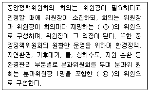
- ㉠ 5명 이상, ㉡ 25명 이내
- ㉠ 25명 이상, ㉡ 25명 이내
- ㉠ 5명 이상, ㉡ 50명 이내
- ㉠ 25명 이상, ㉡ 50명 이내
(정답률: 62%)
90. 국토의 계획 및 이용에 관한 법률상 도시지역내 각 지역별 용적률의 최대한도 기준으로 옳은 것은?
- 주거지역 : 200퍼센트 이하
- 상업지역 : 1천퍼센트 이하
- 공업지역 : 250퍼센트 이하
- 녹지지역 : 100퍼센트 이하
(정답률: 35%)
91. 야생생물 보호 및 관리에 관한 법령상 멸종위기 야생생물의 지정 주기는? (단, 특별히 필요하다고 인정할 때는 제외한다.)
- 3년
- 5년
- 10년
- 15년
(정답률: 55%)
92. 야생생물 보호 및 관리에 관한 법령상 환경부령으로 정하는 먹는 것이 금지되는 야생동물 중 멸종위기 야생동물 2급에 해당하는 것은?
- 산양
- 쇠오리
- 사향노루
- 흑기러기
(정답률: 40%)
93. 국토의 계획 및 이용에 관한 법령상 ( )안에 들어갈 지구로서 가장 적합한 것은?
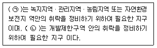
- ㉠ 보전취락지구, ㉡ 집단취락지구
- ㉠ 보전취락지구, ㉡ 개발취락지구
- ㉠ 자연취락지구, ㉡ 개발취락지구
- ㉠ 자연취락지구, ㉡ 집단취락지구
(정답률: 35%)
94. 야생생물 보호 및 관리에 관한 법령상 멸종위기 야 생물 1급에 해당되는 포유류 중 올바르지 않은 것은?
- 늑대
- 삵
- 사향노루
- 호랑이
(정답률: 50%)
95. 자연환경보전법령상 생태통로 설치기준에 관한 설명으로 옳지 않은 것은?
- 생태통로의 길이가 길수록 폭을 좁게 설치한다.
- 생태통로 내부에는 다양한 수식적 구조를 가진 아교 목, 관목, 초목 등으로 조성한다.
- 생태통로 내부에는 돌무더기나 고사목, 그루터기, 장 작더미 등의 다양한 서식환경과 피난처를 설치한다.
- 생태통로 입구와 출구에는 원칙적으로 현지에 자생하 는 종을 식수하며 토양 역시 가능한 한 공사 중 발생한 절토를 사용한다.
(정답률: 76%)
96. 습지보전법상 환경부장관과 해양수산부장관은 습지 조사의 결과를 토대로 몇 년마다 습지보전기초계획을 각각 수립하여야 하는가?
- 3년
- 5년
- 10년
- 20년
(정답률: 44%)
97. 국토기본법상 국토정책위원회에 대한 설명으로 옳지 않은 것은?
- 국토계획 및 정책에 관한 중요사항을 심의하기 위한 대통령 직속의 위원회이다.
- 국토정책위원회는 위원장 1명, 부위원장 2명을 포함한 42명 이내의 위원으로 구성한다.
- 국토정책위원회 위촉위원은 국토계획 및 정책에 관하여 학식과 경험이 풍부한 사람으로서 국무총리가 위촉한 사람이다.
- 국토정책위원회의 업무를 효율적으로 수행하기 위하여 대통령령으로 정하는 바에 따라 분야별로 분과위원 회를 둔다.
(정답률: 11%)
98. 국토의 계획 및 이용에 관한 법령상 광역도시계획 수립을 위해 그 밖에 대통령령이 정하는 기초조사 사항으로 가장 거리가 먼 것은?
- 국제적 협력강화를 위한 부대시설의 설치
- 기반시설 및 주거수준의 현황과 전망
- 기후,지형,자원 및 생태 등 자연적 여건
- 풍수해, 지진 그 밖의 재해의 발생현황 및 추이
(정답률: 53%)
99. 환경정책기본법령상 이산화질소(NO2)의 대기환경기 대기환 옳은 것은? (단, 24시간 평균치이다.)
- 0.02ppm 이하
- 0.03ppm 이하
- 0.⑤ppm 이하
- 0.06ppm 이하
(정답률: 49%)
100. 다음은 습지보전법령상 국가습지심의위원회의 구성 및 운영 등에 관한 사항이다. ( )안에 가장 적합한 것은?
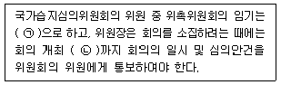
- ㉠ 2년, ㉡ 7일전
- ㉠ 3년, ㉡ 7일전
- ㉠ 2년, ㉡ 14일전
- ㉠ 3년, ㉡ 14일전
(정답률: 32%)